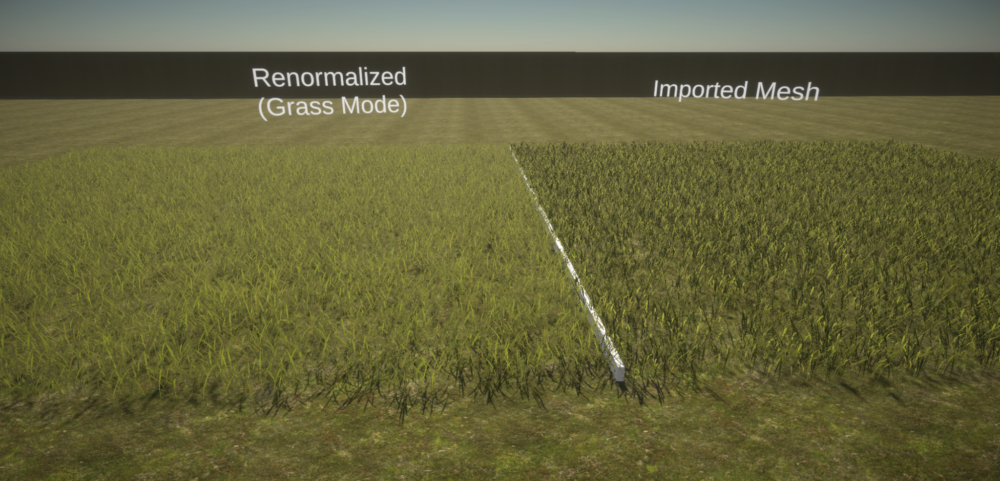
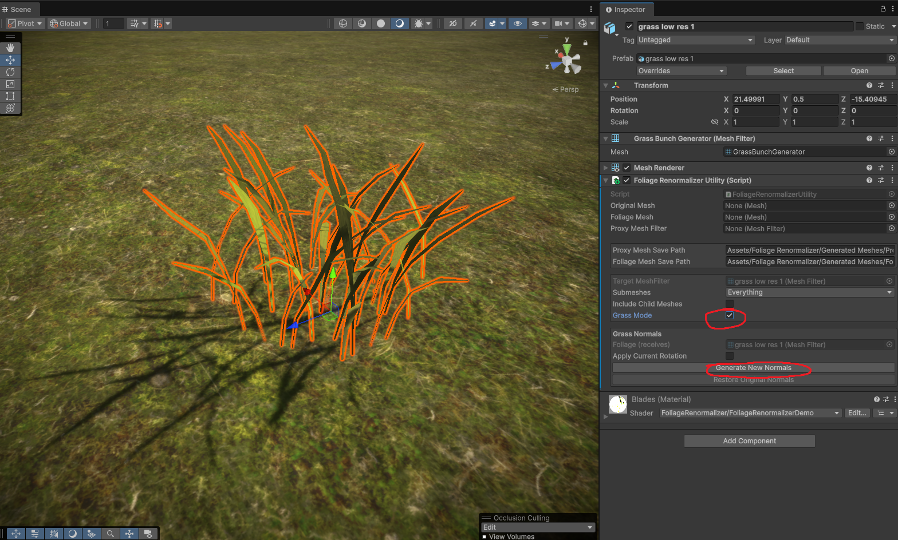

Grass Mode
Grass Mode is super fast and simple, but it has a huge impact on grass quality. It pushes your foliage's normals smoothly upward, so blades of grass catch light as a soft, unified surface instead of a field of flat cards.
Use it for grass, clovers, and other small detail meshes. For trees and bushes, use General Mode instead.

How to Use Grass Mode
- Complete First Steps and enable the Grass Mode tickbox.
- Configure the options below (the defaults are good for most grass).
- Click Generate New Mesh.
That's it. You can revert at any time with Restore Original Mesh.

Options
Apply Current Rotation
Applies the mesh's rotation in place, baking it into the mesh and resetting the transform rotation to 0, 0, 0.
This is useful when your grass is rotated -90 or +90 on the X axis (common for imported models) and you want to use it as a terrain detail, which expects an unrotated mesh.
Ground-Distance AO Baker
Grass Mode can bake ambient occlusion based on height — darkening the base of each blade where it meets the ground and fading to full brightness toward the tips.
- Enable AO Baker — Turn the AO bake on or off.
- Vertex Color Channel — Which vertex color channel (R, G, B, or A) the AO is written to. Choose the channel your shader reads for AO. (TVE uses Green by default.)
- Ground AO Start Height — The height (as a percentage of the mesh bounds) where AO darkening begins. Below this height the mesh is at maximum occlusion.
- Ground AO End Height — The height (as a percentage of the mesh bounds) where AO darkening ends. Above this height there is no occlusion.
- Ground AO Darkening Amount — How strong the darkening is at the base.
Note
For the baked AO to be visible, your shader must read the chosen vertex color channel. See Vertex Color AO in Shaders.